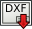

 TechDraw Sauve DXF
|
| Emplacement du menu
|
| TechDraw → Export page Dxf
|
| Ateliers
|
| TechDraw
|
| Raccourci par défaut
|
|
|
| Voir aussi
|
|
|
|
Description
L'outil Exporter la page Dxf enregistre une page de dessin en un fichier au format Dxf
- Cliquer sur le bouton Save page as Dxf
- Une boîte de dialogue est ouverte. Sélectionnez l'emplacement et le nom du fichier.
- Une boîte de dialogue d'enregistrement de fichier s'ouvrira. Sélectionnez un emplacement et un nom de fichier.
Options
None.
Propriétés
Script
Cette fonction est disponible en Python en utilisant la fonction suivante:
TechDraw.writeDXFPage(page,filename)
Notes
- Cette fonction est disponible dans v0.18 et plus.
- Cette fonction exporte la version Dxf R12 (AC1009) et Dxf R14(AC1014).
- R12 est une version plus ancienne et plus simple de la norme, mais devrait être lisible par la plupart des autres logiciels.
- R14 est la version par défaut. Il inclut le support pour les splines entre autres.
- Il y a 2 paramètres qui affectent la sortie Dxf:
- Préférences → Mod → Import → DxfVersionOut - les entrées valides sont 12 ou 14. La valeur par défaut est 14.
- Préférences → Mod → Import → DiscretizeEllipses-true: les splines/ellipses sont des polylines false: les splines/ellipses sont écrites en splines/ellipses. La valeur par défaut est false.
- Si le document FreeCAD contient plusieurs pages, vous devrez sélectionner la page souhaitée dans l'arborescence avant d'appuyer sur le bouton d'exportation.
- Les dimensions radiales et diamétrales s'exporteront correctement que si elles sont "à l'intérieur" de l'arc.
- La mise à l'échelle n'est pas prise en charge. L'objet Dxf sera dessiné dans la taille réelle de la page TechDraw.
- Les unités ne sont pas supportées - le Dxf sera dessiné en mm. Le texte de cote sera affiché exactement comme il est affiché dans TechDraw.
{kind=link}